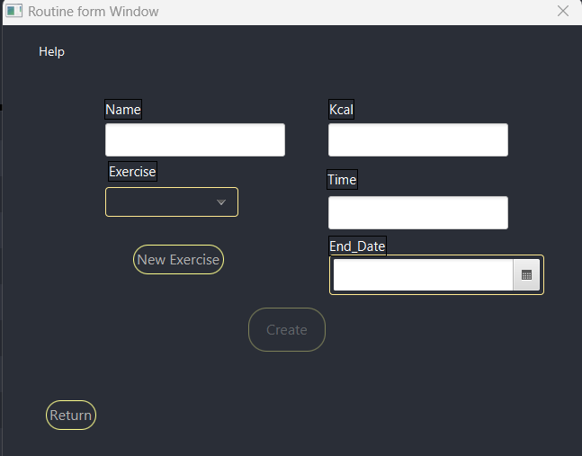
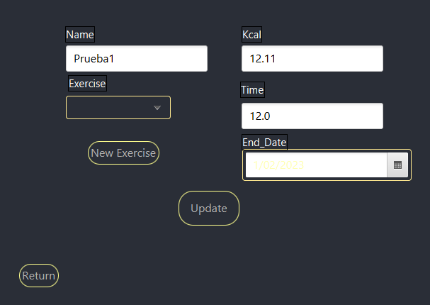
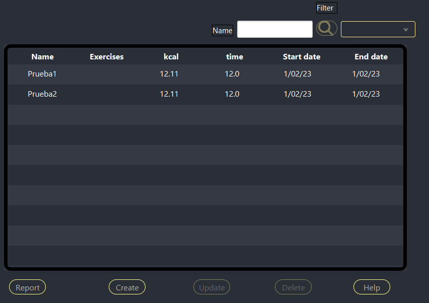

En esta ventana se gestionan las rutinas de un cliente, añadiendo, borrando o actualiandolas. Contine un filtrado de rutinas y también es posible crear un informe de los datos de la tabla de rutinas.
Para crear una rutina primero hay que pulsar el botón de create, al hacerlo se habrirá una ventana con un formulario donde podremos introducir los datos de la nueva rutina. Se deberán escribir el nombre de la rutina el cual no debe superar los 30 caracteres, el tiempo y las calorias, las últimas dos no deben contener números negativos ni cualquier otro tipo de caracter excepto números. La fecha de acabado (end_date) es opcional. Una vez introducidos los datos el botón create del formulario se habilitará y al pulsarlo si no hay ningun problema creará una rutina con los datos introducidos, cerrará la ventana después de informar de que la rutina se ha creado correctamente y los mostrará en la tabla de la primera ventana.
Para actualizar una rutina ya creada lo primero es seleccionar la rutina a modificar en la tabla, una vez seleccionada el botón update se activará, una vez lo pulsemos se abrirá una ventana con un formulario en el que los campos estarán informados con los datos de la ventana seleccionada. Una vez se haya modificado algún campo al pulsar el botón update si todo sale bién se informará de que la modificación se ha realizado correctamente y se cerrará la ventana actual dejando a la vista la ventana en la que se encuentra la tabla
Para borrar una rutina primero hay que seleccionar una fila en la tabla que contiene las rutinas, una vez seleccionada el botón delete se activará y al pulsarlo realizará el borrado de la rutina seleccionada, si ha ido correctamente mostrará un mensaje avisando.
Para buscar rutinas el usuario debe primero escoger mediante que criterio desea buscar eligiendolo en el comboBox del filtrado, al lado del botón con la imagen de lupa. Una vez seleccionado hay que escribir el nombre de la rutina deseada si se ha escogido filtrar mediante nombre, la otra búsqueda solo funcionará si en el campo name se escribe all y buscará todas las rutinas. Una vez haya realizado cualquiera de las dos búsquedas se mostrará en la tabla el resultado.
Para crear un informe primero la tabla debe contener información, sino el botón report no estará activado y no se podrá crear el informe. Con datos en la tabla al pulsar el botón report se abrirá la ventana del informe en la que se mostrarán los datos de la tabla y varias opciones de que hacer con ellos como por ejemplo imprimir el informe.